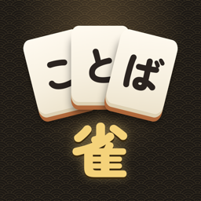

ことば雀 サポート
ことば雀（ことばじゃん） - ひらがな麻雀
「ことば雀」は、ひらがなの牌で単語を作る麻雀です。手牌を並べ替えて、2文字の単語1つと3文字の単語4つを作るとアガリ。果物・乗り物のように同じ仲間の単語を揃えるほど、点数が上がります。
よくある質問
無料で何回遊べますか？
「1局」を1日3回まで無料で遊べます。回数は毎日0時に戻ります。使い切った後は、動画広告を見るごとにもう1局遊べます。買い切り（遊び放題）にすると、1局も東風戦も、何回でも広告なしで遊べます。
購入したのに、遊び放題になりません。
タイトル画面の「設定」 → 「購入を復元」を押してください。購入したときと同じ Apple アカウントでサインインしている必要があります。
広告を読み込めません。
通信できる状態か確かめて、もう一度お試しください。無料の3回は、通信できないときも遊べます。
単語にならない言葉があります。カテゴリがおかしい言葉があります。
対局中のメニュー、または局の結果の「単語を報告」から知らせてください。単語のデータは kotobajan-data で公開していて、報告はそこで受け付けています（GitHub のアカウントが必要です）。アカウントをお持ちでない方は、下のメールアドレスでも受け付けます。
途中でやめた対局の続きを遊べますか？
対局は自動で保存されます。次に開いたとき、タイトル画面の「続きから」で続きを遊べます。
遊び方が分かりません。
タイトル画面の「遊び方」で、ルールを順に説明しています。対局中もメニューから開けます。
お問い合わせ
不具合のご報告やご要望は、次のメールアドレスまでお願いします。お使いの端末（例：iPhone 16）と iOS のバージョンを添えていただけると助かります。
ryohei.dev.support@gmail.com
Kotoba-jan Support
Kotoba-jan (ことば雀) is a mahjong game played with hiragana tiles. Rearrange your hand into one 2-letter word and four 3-letter words to win. Collecting words of the same kind, such as fruits or vehicles, raises your score.
FAQ
How much can I play for free?
You can play three single rounds (1局) a day for free; the count resets at midnight. After that, each video ad you choose to watch gives one more round. The one-time purchase (Unlimited Play) lets you play single rounds and East matches (東風戦) as often as you like, with no ads.
I made a purchase, but it is not unlocked.
Open "設定" (Settings) on the title screen and tap "購入を復元" (Restore purchases). Make sure you are signed in with the same Apple Account you used for the purchase.
Ads do not load.
Check your connection and try again. The three free rounds can be played offline.
A word is not accepted, or its category is wrong.
Use "単語を報告" (Report a word) in the in-game menu or on the round result. The word data is published at kotobajan-data, where reports are accepted (a GitHub account is required). You can also email us.
Contact
For bug reports and requests, please email us. Including your device model and iOS version helps.
ryohei.dev.support@gmail.com